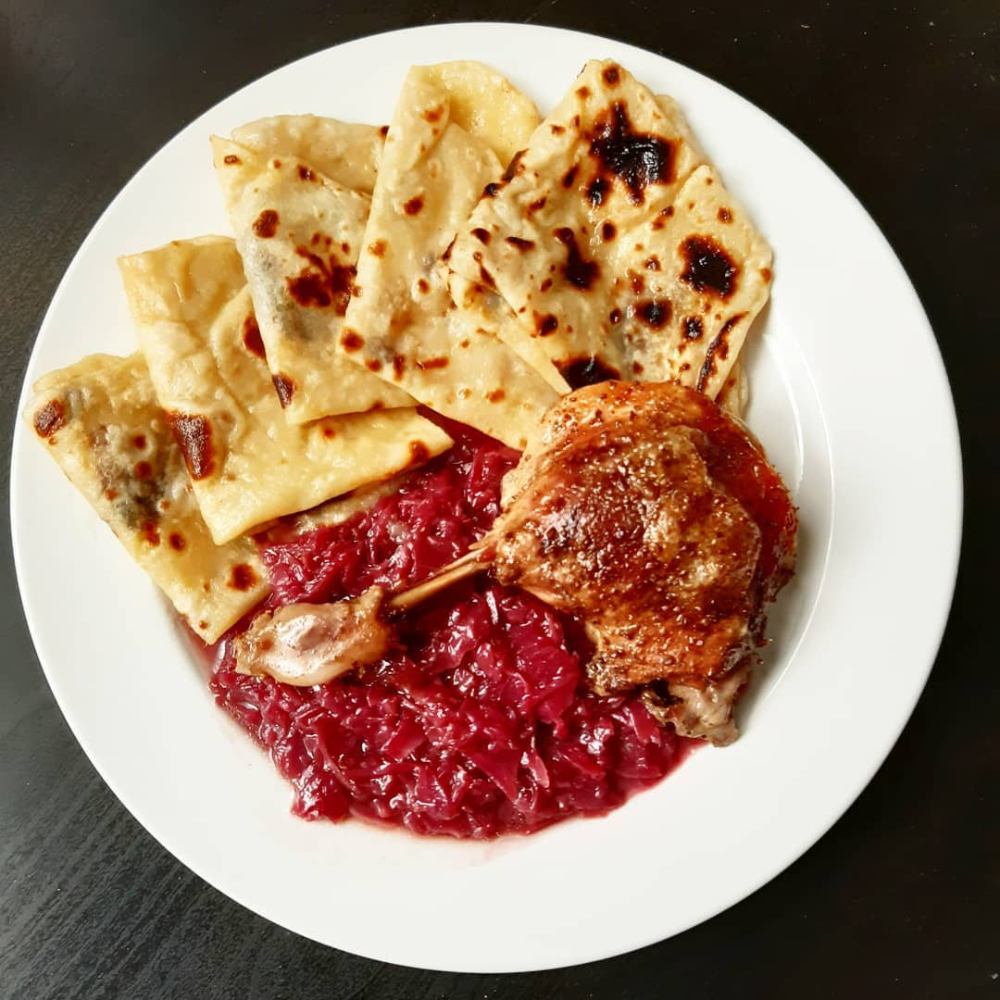

Pečena kačka s karamelizovanou kapustou a lokše
----------------------------------------------------------------------------
Ingrediencie
Kapusta
1,5 kg červená kapusta
3 čl soľ
100 g cibuľa
5 PL kryštálový cukor
50 ml olej
4 dcl vývaru alebo vody
2 citrony
1 dcl vody
1 PL hladká múka/solamil na zahustenie podľa chuti, nie je potrebne ja dávam
Kačka
6 ks kačacie stehná alebo celá kačica a naporcujeme na kusy
½ pl rasca celá
½ pl rasca drevená
1 PL soľ
2 ks jablká
Postup
Kačacie stehna z oboch strán dobre oslovíme a posypeme rascou. Dame do pekáča. Jablka umyjeme, prekrojíme na polovicu a položíme medzi kačacie stehná. Zakryjeme pokrievkou alebo alobalom a dáme do vyhriatej rúry na 160°C na 2,5 h. Ohrev z hora a zdola. Po asi hodine aj pol pekáč vyberieme a zlejeme masť do nádoby vedľa ( tu použijeme na mastenie lokší ja k nej pridávam aj maslo). Znova zakryjeme a pečieme ešte hodinu. Po hodine odkryjeme, podlejeme asi 1dcl vody a dopekáme na 180° C teplý vzduch aby sme dosiahli krasne chrumkavú kožičku.
Potom vyberieme, jabĺčka môžeme zjesť ale ja vyhadzujem sú tam na to aby sa mäsko nevysušilo - dávajú vlhkosť.
Kapustu si nakrajame na drobno alebo nastrúhame. Dáme na utierku a dobre osolíme 2PL soľ a počkáme asi pol hodinu kym pustí šťavu. Potom ju zatočíme ako roládu, aby utierka pohltila co najviac slanej šťavy. Znova odrolujeme.
Cibuľu nakrájame na drobno a na oleji opražíme do sklovita aj troška viac, pridáme cukor a upálime na karamel. Nebojte cibuľa sa nespáli. Ak nám karamel krásne vonia z utierky presypeme kapustu. Pražíme. Karamel nam stvrdne ale to nevadí on sa znova rozpustí, len musime dobre miešať kapustu. Asi po 10 min praženia pridáme soľ a zalejeme, necháme dusiť. Ked je kapusta mäkká, ochutíme citrónovou šťavou, pripadne cukrom a soľou. Ja mam rada zahustenú, tak v troche vody rozmiešam múku, vylejem do kapusty a nechám prevariť.
#duck#roastedduck#pecenakacica#kacka#cervenakapustaskatamelom#cabbage#Redcabbage#lemon#Apple#delicacy#potatoes#drybakedpotatopancakes#duckointment#butter#lunch#homecooking#recipe#thebestfood#foodporn#mastenelokse#loksa#zemiakovelokse#